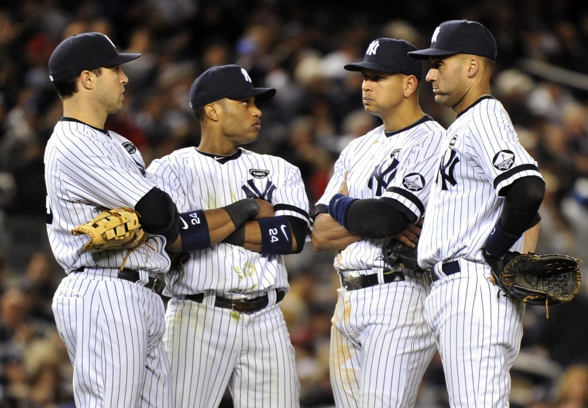

adidas 球員生涯成績

10年球季可謂坎諾的生涯年，不僅在全壘打持續提升，且安打再突破200支，打擊率0.3以上，打點109分、並為生涯首度破百，因此擠進了美聯最有價值球員的票選名單內，該年度獲得了第三名。
11年和12年球季也延續了10年球季的表現，11年的時候繳出了生涯新高的118分打點、而12年則全壘打首度突破單季30轟，且打擊率皆在0.3以上，並在美聯最有價值球員票選中分別獲得第6和第4的成績，可謂是擠進了聯盟強打者之林當中。
13年球季時，於5月10日，對戰科羅拉多洛磯時，於三局上半時敲出生涯第1500支安打，是紐約洋基隊史上第五位在30歲或以前打成此成績的選手，並率隊以3-1擊敗科羅拉多洛磯。
2013球季結束後成為自由球員，2013年12月6日，西雅圖水手以10年2億4000萬美元的合約，簽下坎諾。
連接到首頁
連到第3頁
連到第4頁